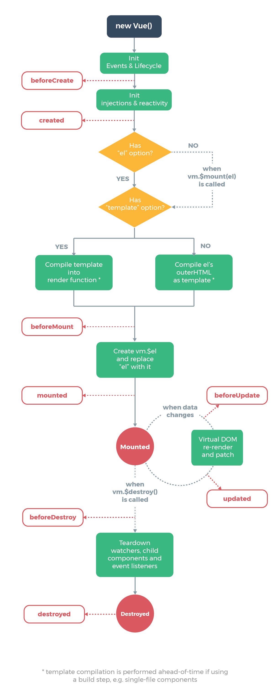

Course 21/22
This are my notes written in markdown from reading the guide of Vue.js (v2) (Vue 2021), the book (Djirdeh, Murray, and Lerner 2018) and other references.
These notes have been ellaborated using pandoc. At the current time (December 2021), this notes are experimental, since the HTML generated by pandoc has some incompatibilities with Vue and I had to resort to some awful tricks to made them work.
To see the result, you can open the deployment in the GitHub pages https://crguezl.github.io/learning-vue-geting-started-guide/ of the repo containing the notes.
We have inserted this HTML code into this markdown page and then used pandoc to translate it to HTML:
<!-- development version, includes helpful console warnings -->
<script src="https://cdn.jsdelivr.net/npm/vue@2/dist/vue.js"></script>
<h2>
<div id="app">
{{ message }}
</div>
</h2>
<script>
var app = new Vue({
el: '#app',
data: {
message: 'Hello Vue!'
}
})
</script>{{ message }}We have already created our very first Vue app!
This looks pretty similar to rendering a string template, but Vue has done a lot of work under the hood. The data and the DOM are now linked, and everything is now reactive!.
How do we know?
app.message to a different value.
This message appears verbatim:
<h3>{{ message }}</h3>because it is outside the element to wich Vue has been anchored.
Here we define a second entry point for a second Vue app object:
<div id="app-2">
<span v-bind:title="message">
<strong>
Hover your mouse over me for a few seconds
to see my dynamically bound title!
</strong>
</span>
</div>
<script>
var app2 = new Vue({
el: '#app-2',
data: {
message: 'You loaded this page on ' + new Date().toLocaleString()
}
})
</script>Hover your mouse over me for a few seconds to see my dynamically bound title!
Here we are encountering something new.
v-bind attribute you are seeing is called a directive.v- to indicate that they are special attributes provided by Vue, and as you may have guessed, they apply special reactive behavior to the rendered DOM.title attribute up-to-date with the message property on the Vue instance.If you open up your JavaScript console again and enter
app2.message = ‘some new message’,
you’ll once again see that the bound HTML - in this case the title attribute - has been updated.
It’s easy to toggle the presence of an element, too:
<div id="app-3">
<span v-if="seen">Now you see me</span>
</div>
<script>
var app3 = new Vue({
el: '#app-3',
data: {
seen: true
}
})
</script>This example doesn’t work due to pandocmodifying the directive v-if. Go to the HTML and change it.
Now you see me
There are quite a few other directives, each with its own special functionality.
For example, the v-for directive can be used for displaying a list of items using the data from an Array:
<div id="app-4">
<ol>
<li v-for="todo in todos">
{{ todo.text }}
</li>
</ol>
</div>
<script>
var app4 = new Vue({
el: '#app-4',
data: {
todos: [
{ text: 'Learn JavaScript' },
{ text: 'Learn Vue' },
{ text: 'Build something awesome' }
]
}
})
</script><div id="app-5">
<p>{{ message }}</p>
<button v-on:click="reverseMessage">Reverse Message</button>
</div>
<script>
var app5 = new Vue({
el: '#app-5',
data: {
message: 'Hello Vue.js!'
},
methods: {
reverseMessage: function () {
this.message = this.message.split('').reverse().join('')
}
}
})
</script>{{ message }}
Vue also provides the v-model directive that makes two-way binding between form input and app state a breeze:
<div id="app-6">
<p>{{ message }}</p>
<input v-model="message">
</div>
<script>
var app6 = new Vue({
el: '#app-6',
data: {
message: 'Hello Vue!'
}
})
</script>{{ message }}
The component system is another important concept in Vue, because it’s an abstraction that allows us to build large-scale applications composed of small, self-contained, and often reusable components.
If we think about it, almost any type of application interface can be abstracted into a tree of components:
In Vue, a component is essentially a Vue instance with pre-defined options. Registering a component in Vue is straightforward:
// Define a new component called todo-item
Vue.component('todo-item', {
template: '<li>This is a todo</li>'
})
let app = new Vue(...)Now you can compose it in another component’s template:
<ol>
<!-- Create an instance of the todo-item component -->
<todo-item
v-for="item in groceryList">
</todo-item>
</ol>But this would render the same text for every todo, which is not super interesting.
We should be able to pass data from the parent scope into child components.
Let’s modify the component definition to make it accept a prop:
Vue.component('todo-item', {
props: ['todo'],
template: '<li>{{ todo.text }}</li>'
})The todo-item component now accepts a “prop,” which is like a custom attribute. This prop is called todo.
Now we can pass the todo into each repeated component using v-bind:
<div id="app-7">
<ol>
<todo-item
v-for="item in groceryList"
v-bind:todo="item"
v-bind:key="item.id"
></todo-item>
</ol>
</div>Now when using the todo-item we bind the todo property to the item in the groceryList array so that its content can be dynamic.
We also need to provide each component with a “key,” which will be explained later.
Vue.component('todo-item', {
props: ['todo'],
template: '<li>{{ todo.text }}</li>'
})
var app7 = new Vue({
el: '#app-7',
data: {
groceryList: [
{ id: 0, text: 'Vegetables' },
{ id: 1, text: 'Cheese' },
{ id: 2, text: 'Whatever else humans are supposed to eat' }
]
}
})Open the console and add to app7.groceryList a new item. See what happens.
See section Components Basics to know more about Vue Components.
In a large application, it is necessary to divide the whole app into components to make development manageable.
We will talk more about components later, but here’s an (imaginary) example of what an app’s template might look like with components:
<div id="app">
<app-nav></app-nav>
<app-view>
<app-sidebar></app-sidebar>
<app-content></app-content>
</app-view>
</div>Every Vue application starts by creating a new Vue instance with the Vue function:
var vm = new Vue({
// options
})Although not strictly associated with the MVVM pattern, Vue’s design was partly inspired by it. As a convention, we often use the variable vm (short for ViewModel) to refer to our Vue instance. (Vue 2021)
When you create a Vue instance, you pass in an options object. See the API.
These are the main proeprties of the options object:
A Vue application consists of a root Vue instance created with new Vue, optionally organized into a tree of nested, reusable components.
For example, a todo app’s component tree might look like this:
Root Instance
└─ TodoList
├─ TodoItem
│ ├─ TodoButtonDelete
│ └─ TodoButtonEdit
└─ TodoListFooter
├─ TodosButtonClear
└─ TodoListStatisticsAll Vue components are also Vue instances, and so accept the same options object (except for a few root-specific options).
When a Vue instance is created, it adds all the properties found in its data object to Vue’s reactivity system.
When the values of those properties change, the view will react, updating to match the new values.
// Our data object
var data = { a: 1 }
// The object is added to a Vue instance
var vm = new Vue({
data: data
})
// Getting the property on the instance
// returns the one from the original data
vm.a == data.a // => true
// Setting the property on the instance
// also affects the original data
vm.a = 2
data.a // => 2
// ... and vice-versa
data.a = 3
vm.a // => 3When this data changes, the view will re-render.
It should be noted that properties in data are only reactive if they existed when the instance was created. That means if you add a new property, like:
vm.b = 'hi'Then changes to b will not trigger any view updates.
If you know you’ll need a property later, but it starts out empty or non-existent, you’ll need to set some initial value. For example:
data: {
newTodoText: '',
visitCount: 0,
hideCompletedTodos: false,
todos: [],
error: null
}The only exception to this being the use of Object.freeze(), which prevents existing properties from being changed, which also means the reactivity system can’t track changes.
var obj = {
foo: 'bar'
}
Object.freeze(obj)
new Vue({
el: '#app',
data: obj
})<div id="app">
<p>{{ foo }}</p>
<!-- this will no longer update `foo`! -->
<button v-on:click="foo = 'baz'">Change it</button>
</div>In addition to data properties, Vue instances expose a number of useful instance properties and methods. These are prefixed with $ to differentiate them from user-defined properties.
For example:
var data = { a: 1 }
var vm = new Vue({
el: '#example',
data: data
})
vm.$data === data // => true
vm.$el === document.getElementById('example') // => true
// $watch is an instance method
vm.$watch('a', function (newValue, oldValue) {
// This callback will be called when `vm.a` changes
})See Instance Properties in the API Reference.
Each Vue instance goes through a series of initialization steps when it’s created - for example,
Along the way, it also runs functions called lifecycle hooks, giving users the opportunity to add their own code at specific stages.
For example, the created hook can be used to run code after an instance is created:
new Vue({
data: {
a: 1
},
created: function () {
// `this` points to the vm instance
console.log('a is: ' + this.a)
}
})
// => "a is: 1"There are also other hooks which will be called at different stages of the instance’s lifecycle, such as mounted, updated, and destroyed.
All lifecycle hooks are called with their this context pointing to the Vue instance invoking it.
Below is a diagram for the instance lifecycle. You don’t need to fully understand everything going on right now, but as you learn and build more, it will be a useful reference.
